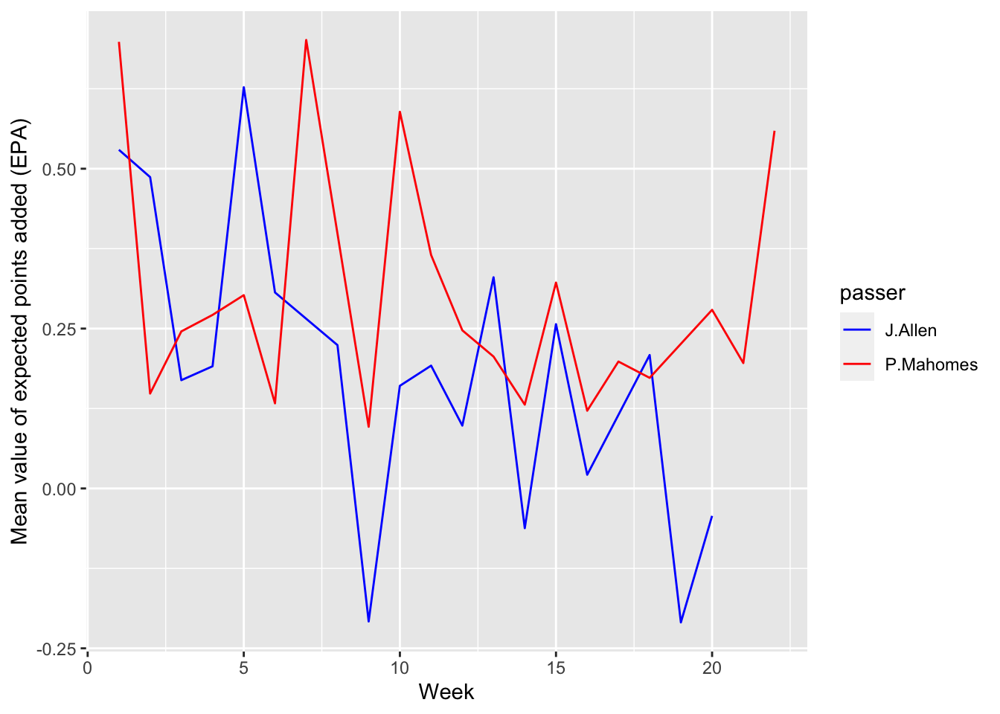

NFL2022_stuffs <- read.csv('https://bcdanl.github.io/data/NFL2022_stuffs.csv')Question 1. Personal Website on GitHub
Q1a
Provide a link for your Github repository ✅ https://github.com/s1arkey/s1arkey.github.io
Add a URL for your website (https://YOUR_GITHUB_USERNAME.github.io/) in the About section in your GitHub repository webpage by clicking the setting. ✅
- See about section in my GitHub repository webpage for answer
- Link to website https://s1arkey.github.io/
Q1b
Make sure that your GitHub repository, named YOUR_GITHUB_USERNAME.github.io, is set to public. ✅
Update your website at https://YOUR_GITHUB_USERNAME.github.io/index.html to:
Include links to (1) your LinkedIn page, (2) GitHub page (https://github.com/YOUR_GITHUB_USERNAME), and (3) a PDF file of your Rèsume (https://YOUR_GITHUB_USERNAME.github.io/YOUR_RESUME.pdf) ✅
Offer a description of yourself, detailing your education background and professional experience. ✅
Display your own profile picture with your face, not the one shown below. ✅
Q1c
Change the title of your blog. ✅
- That is, to replace Insightful Analytics with your own blog name.
Remove the blog posts Post With Code, Starwars, and Beer Markets. ✅
Revise the Welcome To My Blog post. ✅
Post three different blog articles based on data analysis using the following three CSV files: ✅
- https://bcdanl.github.io/data/DOHMH_NYC_Restaurant_Inspection.csv
- https://bcdanl.github.io/data/spotify_all.csv
- https://bcdanl.github.io/data/beer_markets.csv
Make sure that each blog post has categories and is associated with a proper image file that is displayed as a thumbnail at the list page of the blog. ✅
Make sure that each blog post uses emojis properly. (E.g., 😄 🍺 🎶 🍕) ✅
Make sure that each blog post includes its thumbnail image and at least three ggplot figures. ✅
You can refer to the previous DANL 200 Homework Assignments and Exams for your blog posts.
##Question 2. NFL in 2022 🏈
- Add a blog post with your answers for Question 2 to your website (https://YOUR_GITHUB_USERNAME.github.io/).
- Make sure that your blog post for Question 2 includes all the questionnaires and your answers to them.
- Make sure that your blog post for Question 2 has a section for each sub-question (e.g., Q2a, Q2b) in Question 2, so that the Table of Contents display the section for each questionnaire.
- The following is the data.frame for Question 2.
- NFL2022_stuffs is the data.frame that contains information about NFL games in year 2022, in which the unit of observation is a single play for each drive in a NFL game.
Variable Description 🏈
- play_id: Numeric play identifier that when used with game_id and drive provides the unique identifier for a single play
- game_id: Ten digit identifier for NFL game.
- drive: Numeric drive number in the game.
- week: Season week.
- posteam: String abbreviation for the team with possession.
- qtr: Quarter of the game (5 is overtime).
- half_seconds_remaining: Numeric seconds remaining in the half.
- down: The down for the given play.
- Basically you get four attempts (aka downs) to move the ball 10 yards (by either running with it or passing it).
- If you make 10 yards then you get another set of four downs.
- pass: Binary indicator if the play was a pass play.
- wp: Estimated winning probability for the posteam given the current situation at the start of the given play.
Q2a 🏈
library(tidyverse)── Attaching core tidyverse packages ──────────────────────── tidyverse 2.0.0 ──
✔ dplyr 1.1.2 ✔ readr 2.1.4
✔ forcats 1.0.0 ✔ stringr 1.5.0
✔ ggplot2 3.4.4 ✔ tibble 3.2.1
✔ lubridate 1.9.2 ✔ tidyr 1.3.0
✔ purrr 1.0.2
── Conflicts ────────────────────────────────────────── tidyverse_conflicts() ──
✖ dplyr::filter() masks stats::filter()
✖ dplyr::lag() masks stats::lag()
ℹ Use the conflicted package (<http://conflicted.r-lib.org/>) to force all conflicts to become errorslibrary(skimr)In data.frame, NFL2022_stuffs, remove observations for which values of posteam is missing.
q2a <- NFL2022_stuffs %>%
filter(!is.na(posteam))Q2b 🏈
- Summarize the mean value of pass for each posteam when all the following conditions hold:
- wp is greater than 20% and less than 75%;
- down is less than or equal to 2; and
- half_seconds_remaining is greater than 120.
q2b <- NFL2022_stuffs %>%
filter(between(wp, 0.2, 0.75),
down <= 2,
half_seconds_remaining > 120)
meanvalq2b <- q2b %>%
group_by(posteam) %>%
summarise(mean_pass = mean(pass, na.rm = TRUE))Q2c 🏈
- Provide both (1) a ggplot code with geom_point() using the resulting data.frame in Q2b and (2) a simple comments to describe the mean value of pass for each posteam.
- In the ggplot, reorder the posteam categories based on the mean value of pass in ascending or in descending order.
meanvaldesc <- meanvalq2b %>%
arrange(desc(mean_pass))
ggplot(meanvaldesc, aes(x = mean_pass, y = reorder(posteam, mean_pass))) +
geom_point()+
labs(x= "Percentage of Pass Plays",
y= "Team with possesion")
Comments:
- Cincinnati, Kansas City, Los Angeles Chargers, Buffalo Bills, and Philadelphia eagles had the top 5 highest average percentage of pass plays during the 2022 season.
- Atlanta, Washington, Chicago, New Orleans, and Tennessee had the top 5 lowest average percentage of pass plays during the 2022 season.
Q2d 🏈
- Consider the following data.frame, NFL2022_epa:
NFL2022_epa <- read.csv('https://bcdanl.github.io/data/NFL2022_epa.csv')- Variable description for NFL2022_epa
- play_id: Numeric play identifier that when used with game_id and drive provides the unique identifier for a single play
- game_id: Ten digit identifier for NFL game.
- drive: Numeric drive number in the game.
- posteam: String abbreviation for the team with possession.
- passer: Name of the player who passed a ball to a receiver by initially taking a three-step drop and backpedaling into the pocket to make a pass. (Mostly, they are quarterbacks)
- receiver: Name of the receiver.
- epa: Expected points added (EPA) by the posteam for the given play.
- Create the data.frame, NFL2022_stuffs_EPA, that includes
- All the variables in the data.frame, NFL2022_stuffs;
- The variables, passer, receiver, and epa, from the data.frame, NFL2022_epa. by joining the two data.frames.
- In the resulting data.frame, NFL2022_stuffs_EPA, remove observations with NA in passer.
Answer:
NFL2022_stuffs_EPA <- left_join(NFL2022_stuffs, NFL2022_epa, by = c("play_id", "game_id", "drive", "posteam"))
NFL2022_stuffs_EPA <- NFL2022_stuffs_EPA %>%
filter(!is.na(passer))Q2e 🏈
- Provide both (1) a single ggplot and (2) a simple comment to describe the NFL weekly trend of weekly mean value of epa for each of the following two passers,
- “J.Allen”
- “P.Mahomes”
two_passers <- c("J.Allen", "P.Mahomes")
filtered_twopassers <- NFL2022_stuffs_EPA %>%
filter(passer %in% two_passers)
mean_epa_data <- filtered_twopassers %>% group_by(week, passer) %>%
summarise(mean_epa = mean(epa, na.rm = TRUE))`summarise()` has grouped output by 'week'. You can override using the
`.groups` argument.ggplot(mean_epa_data, aes(x= week, y= mean_epa, color = passer))+
geom_line()+
scale_color_manual(values =c("J.Allen" ="blue", "P.Mahomes"="red"))+
labs(x= "Week",
y= "Mean value of expected points added (EPA)")
Comment: Patrick Mahomes generally had a higher mean value of epa. However, there were a few weeks that Josh Allen had a higher mean value of epa.
Q2f 🏈
Calculate the difference between the mean value of epa for “J.Allen” the mean value of epa for “P.Mahomes” for each value of week.
difference_epa <- mean_epa_data %>%
pivot_wider(names_from = passer, values_from = mean_epa)
difference_epa$epa_differnce <- difference_epa$'J.Allen' - difference_epa$'P.Mahomes'
print(difference_epa)# A tibble: 22 × 4
# Groups: week [22]
week J.Allen P.Mahomes epa_differnce
<int> <dbl> <dbl> <dbl>
1 1 0.530 0.698 -0.169
2 2 0.487 0.148 0.339
3 3 0.169 0.246 -0.0763
4 4 0.191 0.271 -0.0803
5 5 0.627 0.302 0.325
6 6 0.307 0.133 0.173
7 7 NA 0.701 NA
8 8 0.224 NA NA
9 9 -0.208 0.0965 -0.304
10 10 0.161 0.589 -0.429
# ℹ 12 more rowsQ2g 🏈
Summarize the resulting data.frame in Q2d, with the following four variables:
- posteam: String abbreviation for the team with possession.
- passer: Name of the player who passed a ball to a receiver by initially taking a three-step drop, and backpedaling into the pocket to make a pass. (Mostly, they are quarterbacks.)
- mean_epa: Mean value of epa in 2022 for each passer
- n_pass: Number of observations for each passer
Then find the top 10 NFL passers in 2022 in terms of the mean value of epa, conditioning that n_pass must be greater than or equal to the third quantile level of n_pass.
summary_data <- NFL2022_stuffs_EPA %>%
group_by(posteam, passer) %>%
summarise(
mean_epa = mean(epa, na.rm = TRUE),
n_pass = n()
)`summarise()` has grouped output by 'posteam'. You can override using the
`.groups` argument.quantile_threshold_passer <- quantile(summary_data$n_pass, 0.75)
filtered_summary_data <- summary_data %>%
filter(n_pass >= quantile_threshold_passer)
top_10_passers <- filtered_summary_data %>%
arrange(desc(mean_epa)) %>%
head(n=10)
top_10_passers# A tibble: 10 × 4
# Groups: posteam [10]
posteam passer mean_epa n_pass
<chr> <chr> <dbl> <int>
1 KC P.Mahomes 0.286 880
2 MIA T.Tagovailoa 0.234 453
3 SF J.Garoppolo 0.200 348
4 BUF J.Allen 0.172 785
5 DET J.Goff 0.171 661
6 CIN J.Burrow 0.153 854
7 DAL D.Prescott 0.147 529
8 PHI J.Hurts 0.138 672
9 JAX T.Lawrence 0.128 764
10 CLE J.Brissett 0.0912 445